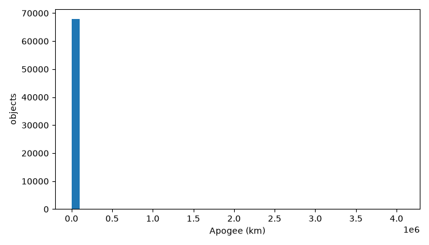
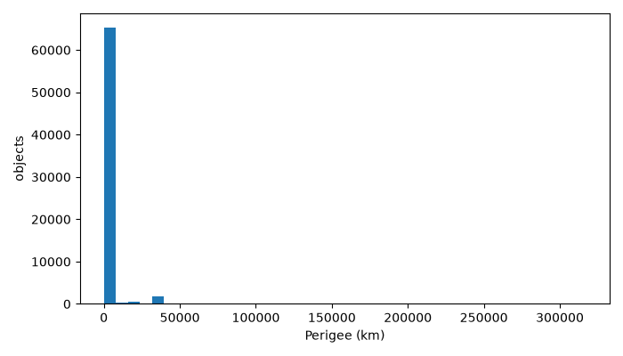
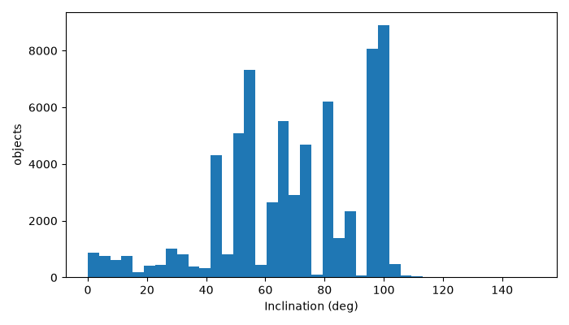
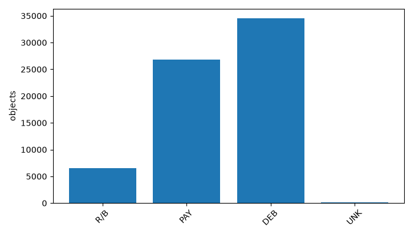

Space debris analytics combines catalog ingestion, orbital-feature processing, propagation, and close-approach screening. The project demonstrates a bounded local-first workflow using a real SATCAT catalog, a CelesTrak TLE sample, Scala/Spark RDD processing, PySpark ML, Python visualizations, and a web-facing results layer. The implementation intentionally distinguishes screening candidates from confirmed collisions and from calibrated risk probabilities.
Large orbital catalogs contain heterogeneous objects, incomplete metadata, and orbital attributes that require validation before analysis. A practical system must process real records, expose useful orbital summaries, identify bounded close-approach candidates, and evaluate a reproducible machine-learning task without inventing collision labels. Review 3 evaluates the Spark RDD concepts, PySpark modelling workflow, visualization, and communication of results.
The primary catalog is the cleaned SATCAT file recorded in data\satcat_clean.json and represented analytically by data\satcat_clean.parquet. It contains 68,129 records and fields including object name, object ID, NORAD catalog ID, object type, owner, launch/decay dates, period, inclination, apogee, perigee, radar cross-section, orbit center, and orbit type. The source is the original project SATCAT file at D:\Projects\space-debris-collision-risk\data\raw\satcat_clean.csv; it was read for bounded processing but not modified.
The object-type counts from the actual EDA run are:
| Object type | Records |
|---|---|
| DEB | 34,568 |
| PAY | 26,830 |
| R/B | 6,571 |
| UNK | 160 |
The approximately 6 GB joined TLE/SATCAT input remains preserved on D: and was not used in the bounded Spark demonstration. The separate TLE screening uses 60 real Starlink TLEs downloaded from the recorded CelesTrak URL, seven UTC epochs, and a ten-minute step.
Real SATCAT catalog
↓
Validation and Parquet representation
↓
Scala/Spark RDD parsing, filtering, aggregation, lineage and persistence
↓
PySpark feature preparation and train/test split
↓
PySpark logistic regression for OBJECT_TYPE
↓
Held-out evaluation and baseline comparison
↓
Python EDA charts and bounded SGP4 candidate screening
↓
API/frontend evidence and documented limitationsThe SGP4 screening is a separate bounded orbital demonstration. It uses TEME coordinates, kilometres for distance, km/s for relative velocity, a 50 km inclusive threshold, and preserved source TLE lines. Its output is a candidate close approach, not a collision or a probability.
The final RDD implementation is in C:\space-debris-collision-risk-output\phase-2b\spark-rdd\src\main\scala\org\course\spacedebris\rdd\RddAnalysis.scala. It reads the single canonical catalog at C:\space-debris-collision-risk-output\project\data\review3_catalog.csv. Earlier fixture files are preserved as historical evidence but are not used by the final execution command.
The job creates an RDD using SparkContext.textFile, repartitions it, parses CSV records, expands parsed options with flatMap, and filters records to an altitude range of 200–2,000 km. The meaningful transformations are:
repartition to control the requested partition count;map(parseLine) for validation and record construction;flatMap to remove invalid parse results and expand aliases;filter for the orbital altitude range;reduceByKey and sortByKey for category aggregation and deterministic ordering;distinct and sortBy for alias analysis.The job performs count, collect, take, and reduce. Category records are converted to (category, 1) pairs and aggregated using reduceByKey; the result is collected and sorted by key.
Command:
$base = 'C:\space-debris-collision-risk-output'
$module = Join-Path $base 'phase-2b\spark-rdd'
$catalog = Join-Path $base 'project\data\review3_catalog.csv'
$env:JAVA_HOME = 'C:\space-debris-collision-risk-output\tools\jdk-17.0.20.1+1'
$env:JAVA_TOOL_OPTIONS = '--add-exports=java.base/sun.nio.ch=ALL-UNNAMED --add-opens=java.base/java.nio=ALL-UNNAMED --add-opens=java.base/java.lang.invoke=ALL-UNNAMED --add-opens=java.base/java.util=ALL-UNNAMED'
mvn -f "$module\pom.xml" "-Dmaven.repo.local=$base\phase-2b\m2" test
mvn -f "$module\pom.xml" "-Dmaven.repo.local=$base\phase-2b\m2" compile exec:java "-Dexec.args=$catalog 4" "-Dexec.cleanupDaemonThreads=false"Observed output is preserved in submission\evidence\scala-rdd-catalog-final.log: 91,372 valid rows in the 200–2,000 km altitude range, four partitions before and after repartition, category counts DEB 28,988, PAY 55,016, R/B 6,331, and UNK 1,037, and total filtered altitude 64,619,398.090 km. The actual lineage includes HadoopRDD, textFile, repartition shuffle, map, flatMap, filter, and cached partitions.
The final job reports four partitions. The printed DAG explanation connects the source, repartition, parsing, filtering, persistence, category branch, alias branch, and altitude reduction. valid.persist() is followed by multiple actions; the lineage reports four cached partitions and approximately 22.7 MiB in memory.
The disposable fault fixture is separate from the real catalog and uses eight in-memory integers. Its preserved log shows partition 0 failing at attempt 0, succeeding at attempt 1, and recovered total 36 matching the independent baseline. This demonstrates local task retry/recomputation from lineage only; it does not demonstrate machine, executor, or production failure recovery.
Evidence:
submission\evidence\scala-rdd-catalog-final.logsubmission\evidence\fault-tolerance.logphase-2b\spark-rdd\src\main\scala\org\course\spacedebris\rdd\RddAnalysis.scalaThe PySpark model is implemented in scripts\pyspark_ml_object_type.py and executed in the isolated WSL2 runtime with Spark/PySpark 3.5.1, Java 11.0.32, and Python 3.12.3.
The model uses five numeric orbital/catalog features: PERIOD, INCLINATION, APOGEE, PERIGEE, and RCS. Median imputation is fitted on the training data, followed by vector assembly and training-fitted label indexing. Identifiers and the target are excluded from the feature vector.
The reproducible split uses seed 42 with 51,027 training rows and 17,102 test rows. The model is logistic regression evaluated on held-out data. Actual results from data\pyspark_ml_validation_20261015\metrics.json:
| Metric | Result |
|---|---|
| Accuracy | 0.663899 |
| Macro-F1 | 0.627583 |
| Majority baseline accuracy | 0.511753 |
| Majority baseline macro-F1 | 0.169258 |
Class-level F1 values are DEB 0.754435, PAY 0.610807, R/B 0.038328, and UNK 0.000000. Model reload prediction equivalence is recorded as true.
The target is SATCAT OBJECT_TYPE classification. It is not collision risk, conjunction outcome, collision probability, or a validated orbital-risk model. The separate candidate prioritization heuristic uses miss distance and relative velocity and is not used as a training label.
The executable notebook notebooks\catalog_visualizations.ipynb generates genuine descriptive charts from the canonical catalog. Its outputs are preserved under reports\eda\notebook\. The existing EDA run also produced four charts from the cleaned SATCAT processing run:




The chart metadata and missing-value counts are in reports\eda\eda.json. The charts are actual outputs, not illustrative placeholders.
The real SATCAT catalog was loaded with 68,129 rows and zero rejected rows in the bounded ingestion run. The RDD sample demonstrates the required Spark mechanics on records derived from the real catalog. The PySpark model performs better than the majority baseline for the selected object-type task, but the very low R/B and UNK recall shows that the model is not uniformly reliable across classes.
The bounded SGP4 screen found one Starlink candidate at 19.837271672 km separation and 0.216007095 km/s relative velocity at 2026-10-14T05:50:00Z. The shell implementation matched the brute-force reference on bounded fixtures and uses a streaming epoch API, but the candidate is only a screening result. No independent historical conjunction labels were available for supervised collision-risk modelling.
Review 3 requirements are demonstrated for RDD concepts, PySpark preprocessing/splitting/model/evaluation, and visualization. The real-data RDD run closes the earlier gap of relying only on a synthetic fixture, while remaining bounded and safe. Future work requiring additional inputs includes uncertainty-aware conjunction assessment, independent historical CDM/orbit validation, and any collision-risk model with defensible labels. Those tasks are not claimed complete here.
data\screening.json.reports\historical-sources\nasa-iridium-cosmos-event-summary.pdf.data\satcat_clean.json and reports\pipeline-final.log.The final audit is reports\review3-final-submission-audit.md. Regression commands and outcomes are preserved under reports\ and submission\evidence\. The original D: dataset and pre-existing Git changes were preserved.